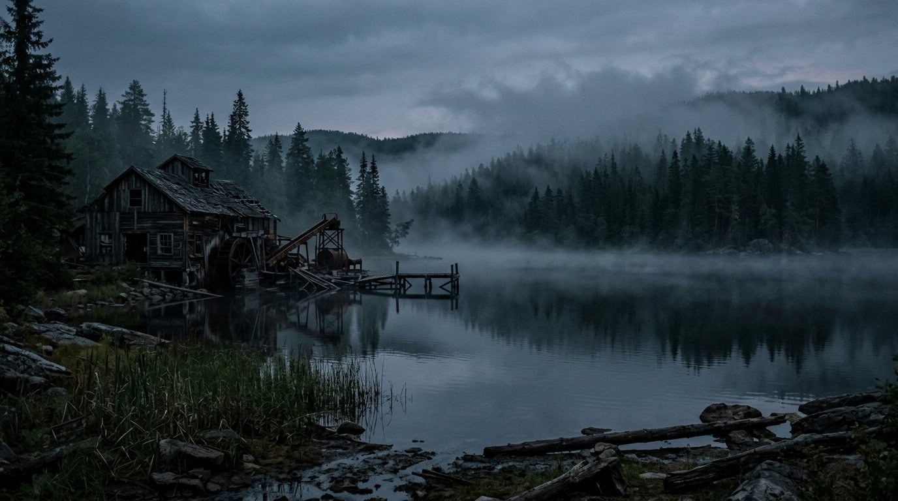

Repères et accès
Les Bois couvrent la Réserve naturelle de Priozersky, zone boisée de taille moyenne avec plaines, petites collines, une scierie et les bunkers ZB-014 et ZB-016. Un BTR-82A parcourt le secteur : il est neutre tant qu’on ne l’attaque pas, mais le service « Transport de passager » peut en faire un allié ponctuel. Fiche publique.
Volume
35 minutes, 10 à 14 PMC, tous niveaux admis. 332 points de spawn relevés : la carte est plus vaste que sontemps de parcours ne le laisse croire.
Équipement fixe
Des armes fixes de type NSV Utyos, et la présence conjointe de snipers de bordure et de champs de mines.
Bunkers
ZB-014 et ZB-016 ne s’ouvrent qu’à la lumière verte d’un lance-flammes. Ce sont des sorties à clé, pas des sorties de repli.
Les mines ne se désamorcent pas. Les champs de mines sont invisibles, se réarment après explosion et ne peuvent être déclenchés que par un joueur. Entrer dedans relève du hasard : aucun repère ne permet de les éviter avec certitude. La fiche publique signale des mines non balisées à l’ouest du camp USEC.

Sorties et transits
Dix-huit sorties sont documentées, dont cinq pour les PMC, sept pour les Scavs et cinq partagées. Le lac est le point de repère commun : plusieurs sorties de chaque côté de la carte y donnent accès, ce qui explique que les Bois soient considéré comme la carte aux sorties les plus faciles à retenir. Fil Reddit sur les sorties les plus faciles à retenir.
Sorties documentées
Fiche publique du 18 novembre 2026.
| Sortie | Camp | Toujours ouverte | Usage unique | Conditions | Notes | |
|---|---|---|---|---|---|---|
| Bridge V-Ex | PMC | ✘ | ✔ | per player Maximum of 4 players | The fee amount is influenced by your Scav karma. There are border snipers beyond the vehicle. | pmc |
| Northern UN Roadblock | PMC | ✔ | ✘ | There are border snipers beyond the gate. | — | pmc |
| Power Line Passage (Flare) | PMC | ✔ | ✘ | Shoot a green flare into the sky while inside the signal flare area. If the flare doesn't reach a certain height, the extraction won't open. ; Flares: ; Handheld RSP-30 green flare ; Signal pistol fired 26x75mm green flare ; Only one person amongst a lobby-made group needs to shoot a flare to open the extraction for all members of the group. | Upon entering the signal flare area, a notification will pop up in the bottom right corner of the screen: ; If the flare was fired correctly, a new notification pops up: ; ; ; Signal flare area and extract zone map ; | pmc |
| RUAF Gatelibellé de jeu : Porte RUAF | PMC | ✘ | ✘ | Green flare = Open | — | pmc |
| ZB-014libellé de jeu : ZB-014 | PMC | ✘ | ✘ | Green flares = Open | — | pmc |
| ZB-016libellé de jeu : ZB-016 | PMC | ✘ | ✘ | Green flares = Open | — | pmc |
| Boat | Scav | ✔ | ✘ | — | — | scav |
| Dead Man's Placelibellé de jeu : Place de l'homme mort | Scav | ✔ | ✘ | — | — | scav |
| Eastern Rocks | Scav | ✔ | ✘ | — | — | scav |
| Mountain Stashlibellé de jeu : Cache de la montagne | Scav | ✔ | ✘ | — | — | scav |
| Old Railway Depot | Scav | ✔ | ✘ | — | — | scav |
| RUAF Roadblocklibellé de jeu : Barrage RUAF | Scav | ✔ | ✘ | — | — | scav |
| Scav Bunker | Scav | ✔ | ✘ | — | — | scav |
| Scav Houselibellé de jeu : Cabane de scav | Scav | ✔ | ✘ | — | — | scav |
| Friendship Bridge (Co-Op) | Partagée | ✔ | ✘ | Scav + PMC | On the right side. | shared |
| Outskirtslibellé de jeu : Périphérie | Partagée | ✔ | ✘ | — | — | shared |
| Railway Bridge to Tarkov | Partagée | ✔ | ✘ | Minefield map (Woods) | — | shared |
| UN Roadblocklibellé de jeu : Barrage ONU | Partagée | ✔ | ✘ | There are border snipers beyond the shipping containers. | — | shared |
Transits sortants
Quatre destinations, disponibles une minute après le début du raid.
| Transit | Destination | Camp | Conditions | Emplacement |
|---|---|---|---|---|
| Transit vers l'usine | factory | PMC et Scav | Only available 1 min after raid start | — |
| Transit vers la base militaire | reserve | PMC et Scav | Only available 1 min after raid start | — |
| Transit vers le phare | lighthouse | PMC et Scav | Only available 1 min after raid start | — |
| Transit vers les douanes | customs | PMC et Scav | Only available 1 min after raid start | — |
Intitulés de jeu
Vingt intitulés recensés par l’instantané des données.
| Libellé français | Intitulé de jeu | Camp | Commandée par un interrupteur | Correspondance |
|---|---|---|---|---|
| Barrage ONU | UN Roadblock | PMC | non | retrouvée dans la fiche publique |
| Barrage ONU nord | un-sec | PMC | non | absente de la fiche publique |
| Ligne haute tension (fusée détresse) | wood sniper exit | PMC | non | absente de la fiche publique |
| Pont ferroviaire vers Tarkov | woods secret minefield | PMC | non | absente de la fiche publique |
| Porte RUAF | RUAF Gate | PMC | non | retrouvée dans la fiche publique |
| Périphérie | Outskirts | PMC | non | retrouvée dans la fiche publique |
| Véhicule du pont | South V-Ex | PMC | non | absente de la fiche publique |
| ZB-014 | ZB-014 | PMC | non | retrouvée dans la fiche publique |
| ZB-016 | ZB-016 | PMC | non | retrouvée dans la fiche publique |
| Ancienne gare | Old Station | Scav | non | absente de la fiche publique |
| Barrage ONU | UN Roadblock | Scav | non | retrouvée dans la fiche publique |
| Barrage RUAF | RUAF Roadblock | Scav | non | retrouvée dans la fiche publique |
| Bunker scav | East Gate | Scav | non | absente de la fiche publique |
| Cabane de scav | Scav House | Scav | non | retrouvée dans la fiche publique |
| Cache de la montagne | Mountain Stash | Scav | non | retrouvée dans la fiche publique |
| Le bateau | The Boat | Scav | non | absente de la fiche publique |
| Place de l'homme mort | Dead Man's Place | Scav | non | retrouvée dans la fiche publique |
| Périphérie | Outskirts | Scav | non | retrouvée dans la fiche publique |
| Rochers est | West Border | Scav | non | absente de la fiche publique |
| Pont de l'amitié (Co-Op) | Factory Gate | Partagée | non | absente de la fiche publique |
Deux points méritent d’être notés. Le checkpoint de la route du nord et celui du barrage militaire signalent tous deux la présence de snipers de bordure au-delà de la limite. Le pont ferroviaire vers Tarkov traverse un champ de mines : la sortie est accessible, l’itinéraire ne l’est pas sans risque.
Rencontres et menaces
Cinq rencontres sont possibles dans les Bois. Shturman, à 60 % de présence, tient la scierie et vient avec trois gardes ; le prêtre cultiste et son escorte occupent le village en ruine et la petite maison ; Knight et ses deux combattants se trouvent au second camp Scav ; Partisan, là encore, est à attendre partout.
| Rencontre | Présence | Zones de spawn | Escortes | Localisation (fiche publique) |
|---|---|---|---|---|
| Knight | 20 % | ZoneScavBase2 | Big Pipe ×1, Birdeye ×1 | — |
| Partisan | 25 % | — | — | — |
| Prêtre Cultiste | 30 % | ZoneBrokenVill, ZoneMiniHouse | Guerrier Cultiste ×4 | — |
| Shturman | 60 % | ZoneWoodCutter | Garde de Shturman ×2, Garde de Shturman ×4, Garde de Shturman ×3 | — |
| infectedScreamer | présence certaine | — | — | — |
Le dossier de Shturman
La fiche publique recense une clé de cache de Shturman parmi les clés du lieu, avec la clé de la vieille maison et celles de ses dépendances. La cache est un objectif à part, pas une sortie : la calmer suppose de savoir où elle se trouve.
Dangers de terrain
Les Bois concentrent le danger de bordure le plus lourd du jeu : trente-neuf zones de snipers et vingt-cinq champs de mines relevés sur la carte. Les mines servent à dessiner des frontières artificielles et sont Invisibles ; les snipers, eux, tuent sans être tuables et laissent la cible à 1 % de vie.
| Type de danger | Occurrences | Nature |
|---|---|---|
| Sniper de bordure | 39 | zones invisibles ou balisées selon le type |
| Champ de mines | 25 | zones invisibles ou balisées selon le type |
Clés et butin
Cinq clés documentées, dont la clé du bunker ZB-014 qui conditionne une sortie, la clé de cache de Shturman et les clés de la vieille maison.
- Old house room key
- Old house toilet key
- Shatun's hideout key
- Shturman's stash key accès permanent documenté quête : ✔
- ZB-014 key accès permanent documenté quête : ✔
Un événement à ne pas confondre avec les règles normales. L’événement Wild Wild Woods a été annoncé par le compte officiel le 25 juin 2026 : des groupes de Scavs avaient quitté l’autorité du Fence et attaquaient tout ce qu’ils croisaient, avec des revolvers et des fusils à levier. Le nombre maximal de PMC sur les Bois avait été réduit, les Scavs joueurs y apparaissaient plus tôt, et la pénalité pour agression entre Scavs était suspendue. La campagne a été prolongée puis close le 1er juillet 2026 ; les paramètres ont été rétablis. Annonce du 25 juin et clôture du 1er juillet. Ce cadre est historique : il ne décrit pas le fonctionnement actuel du lieu.
Conduite selon le profil
Sur les Bois, la carte récompense la lenteur. Un raid réussi se joue le long d’un axe identifié — le lac, la route, le bunker — plutôt qu’en surface. Les retours d’expérience publiés sur Reddit insistent sur ce point : les sorties sont de part et d’autre du lac, et le plus dur n’est pas la sortie mais de s’orienter.
- Débutant. Se fixer une seule sortie, celle qui se trouve du côté opposé de l’apparition, et longer le lac pour l’atteindre. La sortie des Outskirts est partagée et sans condition documentée : c’est le repli par défaut.
- Confirmé. Utiliser les bunkers ZB-014 et ZB-016 comme des sorties de second choix : elles demandent une fusée verte, donc une ressource à garder en poche jusqu’au bout du raid.
- Expérimenté. Travailler le BTR : il est neutre et peut être mis à contribution contre une modification de l’infrastructure. Le wiki signale aussi des caches de Rogues ajoutées par la refonte d’autres lieux, une logique de butin dispersé qui s’applique bien aux Bois.
| Profil | Durée | Effectif | Sorties PMC | Sorties Scav | Rencontres | Ennemis |
|---|---|---|---|---|---|---|
| PvP Zone | 35 min | 10-14 | 10 | 10 | Knight, Partisan, Prêtre Cultiste, Shturman, infectedScreamer | des scavs, Shturman, Garde de Shturman, Knight, Big Pipe, Birdeye, Partisan, Prêtre Cultiste, Guerrier Cultiste, infectedScreamer |
| PvE Zone | 35 min | 10-14 | 10 | 10 | BEAR, Knight, Partisan, Prêtre Cultiste, Shturman, USEC, infectedScreamer | des scavs, Sniper, Shturman, Garde de Shturman, Knight, Big Pipe, Birdeye, Partisan, Prêtre Cultiste, Guerrier Cultiste, USEC, BEAR, infectedScreamer |
| PvP Season | 35 min | 10-14 | 10 | 10 | Black Div., Knight, Partisan, Prêtre Cultiste, Shturman, infectedScreamer | des scavs, Shturman, Garde de Shturman, Knight, Big Pipe, Birdeye, Partisan, Prêtre Cultiste, Guerrier Cultiste, Black Div., infectedScreamer |
Aucune variante recensée pour ce lieu.
- ennemis +Sniper, USEC, BEAR
- boss +BEAR, USEC
- ennemis +Black Div.
- boss +Black Div.
Sources et limites
Instantané communautaire des données de jeu du 18 novembre 2026, fiche publique du même jour, et annonces officielles de l’événement de juin 2026. Les positions et les taux d’apparition sont rapportés, non mesurés. Les pourcentages de présence décrivent un instantané : ils ne constituent pas une fréquence de raid.
- Bois — fiche de lieu : lore, sorties, clés, rencontres et dangers.
- Tarkov.dev — cartes et rencontres : instantané du profil PvP Zone.
- Tarkov.dev — libellés français, profil PvE et profil saisonnier : intitulés et écarts.
- Annonce officielle de l’événement et sa clôture : périmètre et durée.
- Fil Reddit : retours d’expérience sur les sorties.
- MapGenie et Kappa Guide : aides de lecture communautaires.